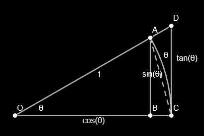

\lim\limits_{x\to c}kf(x)=k\lim\limits_{x\to c}f(x)
\lim\limits_{x\to c}(f\pm g)=\lim\limits_{x\to c}f(x)+\lim\limits_{x\to c}g(x)=L+M
\lim\limits_{x\to c}\frac1g=\frac1{\lim\limits_{x\to c}g}=\frac1M
\lim\limits_{x\to2}\frac{2-x}{4-x^2}=\lim\limits_{x\to2}\frac{\cancel{2-x}}{\textcolor{aqua}{\cancel{(2-x)}(2+x)}}=\lim\limits_{x\to2}\frac1{2+x}=\frac14
\lim\limits_{x\to0}\frac{e^{2x}+e^x-2}{e^x-1}=\lim\limits_{x\to0}\frac{\textcolor{aqua}{\cancel{(e^x-1)}(e^x+2)}}{\cancel{e^x-1}}=e^0+2=3
\lim\limits_{x\to0}(e^x-1)\sin(1/x) \begin{aligned} -1&\le\sin(1/x)\le1\\ -(e^x-1)&\le\textcolor{aqua}{(e^x-1)\sin(1/x)}\le(e^x-1)\\ \lim\limits_{x\to0}-(e^x-1)&\le\lim\limits_{x\to0}\textcolor{aqua}{(e^x-1)\sin(1/x)}\le\lim\limits_{x\to0}(e^x-1)\\ 0&\le\lim\limits_{x\to0}\textcolor{aqua}{(e^x-1)\sin(1/x)}\le0\\ \therefore\;&\lim\limits_{x\to0}(e^x-1)\sin(1/x)=0 \end{aligned}
\lim\limits_{x\to0}\frac{\sin5x}x=5\lim\limits_{x\to0}\frac{\sin5x}{5x}=5\lim\limits_{5x\to0}\frac{\sin5x}{5x}=5 \lim\limits_{x\to\infty}x\sin(1/x)=\lim\limits_{1/x\to0}\frac{\sin(1/x)}{1/x}=1
\begin{aligned}&\textcolor{aqua}{\lim\limits_{x\to c}g(x)\le\textcolor{coral}{\lim\limits_{x\to c}f(x)}\le\lim\limits_{x\to c}h(x)}\land\textcolor{lime}{\lim\limits_{x\to c}g(x)=\lim\limits_{x\to c}h(x)=L}\\\implies&\lim\limits_{x\to c}f(x)=L\end{aligned}
\lim\limits_{x\to0}\frac{\sin x}x=1

- proof \begin{aligned} \because\;&S_\Delta OAC=\frac{\sin\theta}2\\ &S_\cup OAC=\pi r^2\cdot\frac\theta{2\pi}=\frac\theta2\\ &S_\Delta ODC=\frac{\tan\theta}2\\ \end{aligned}\\ \begin{aligned} \therefore\;S_\Delta OAC&\le S_\cup OAC\le S_\Delta ODC\\ \frac{\sin\theta}2&\le\frac\theta2\le\frac{\tan\theta}2\\ 1&\le\frac\theta{\sin\theta}\le\frac1{\cos\theta}\\ \cos\theta&\le\frac{\sin\theta}\theta\le1\\ \lim\limits_{\theta\to0}\cos\theta&\le\lim\limits_{\theta\to0}\frac{\sin\theta}\theta\le1\\ 1&\le\lim\limits_{\theta\to0}\frac{\sin\theta}\theta\le1\\ \end{aligned}\\ \therefore\;\lim\limits_{\theta\to0}\frac{\sin\theta}\theta=1\quad\blacksquare\lim\limits_{x\to0}\frac{1-\cos x}x=0 \begin{aligned} \lim\limits_{x\to0}\frac{1-\cos x}x&=\lim\limits_{x\to0}\frac{1-\cos^2x}{x(1+\cos x)}=\lim\limits_{x\to0}\frac{\sin^2x}{x(1+\cos x)}\\ &=\lim\limits_{x\to0}\frac{\sin x}x\lim\limits_{x\to0}\frac{\sin x}{1+\cos x}=1\cdot\frac02=0 \end{aligned}